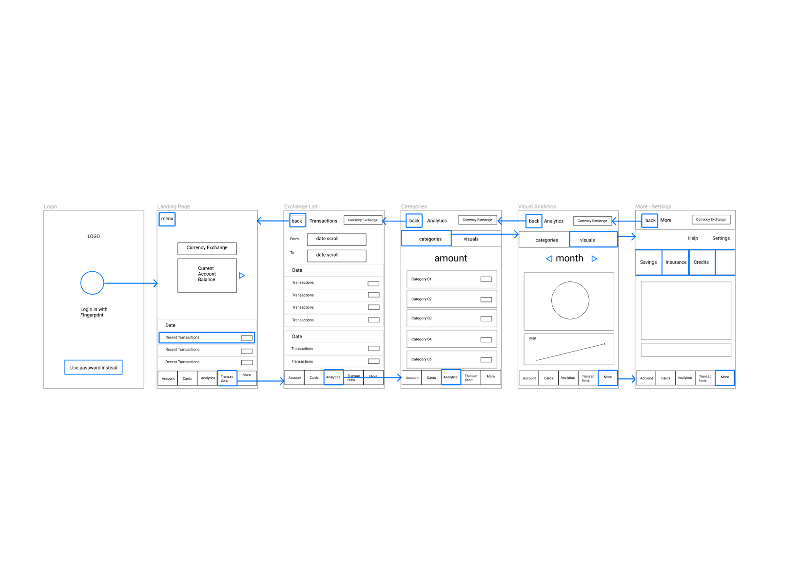
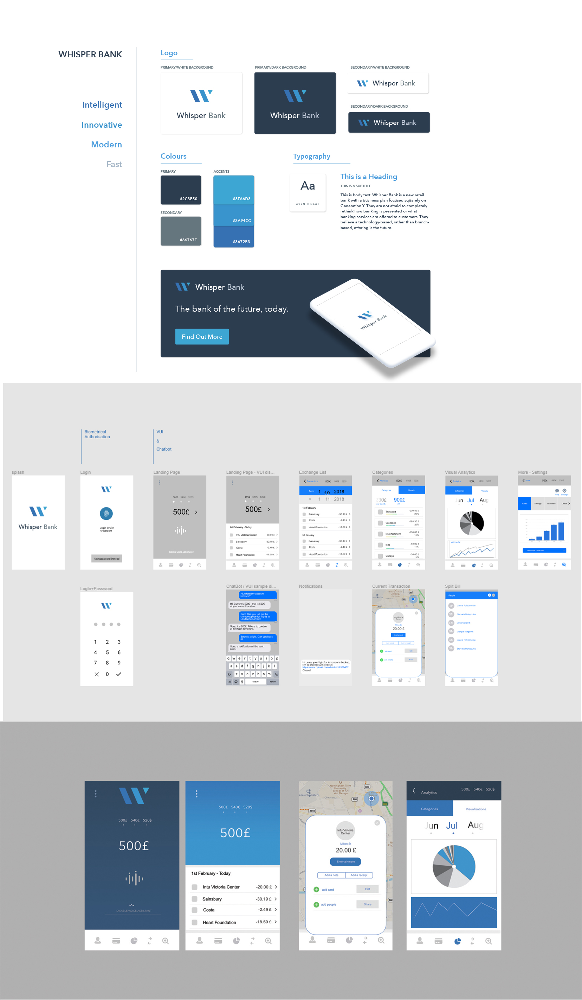

Budgeting for millenials
UX development
The project is a user and market research exercise of creating a budgeting app for millenials. The brief focused on the design of the mobile and tablet, following a mobile first approach. Design seeks to speak for the ones that are on the go, make spontaneous decisions, and have a strong social chararacter – that are the most common consumer characteristics of millenials' personas according to marketing research.
My design emphasizes in have mild user flows across channels, covering main functionalities of dominant products on the market plus providing strong notifications for over-spending and building communities around (alternative) consumption trends.I worked with Balsamiq for wireframing, UXpin and Affinity designer for high - fidelity mockups and Figma for prototyping.
UX Research Brief
I have extended the project to design a millenial banking service, keeping up with current mobile trends on voice interfaces. Wisper Bank is a product such as Atom or Revolut - easy to use, integrating voice APIs, google assistant and enabling transactions in different currencies without extra charges.
Main User flows

brand / UI mockups
Based on the design(s), I have developed a simple budgeting web app using Ruby, HTML/CSS, PostgreSQL and Sinatra Framework . The app has a responsive layout that operates similarly accross channels (smartphone - tablet - desktop). The app has functionalities such as : upload and edit a purchase, classify purchases per catefories and shops, search per purchase date, see the total experiences sum and sum per category. Source code can be found on github.